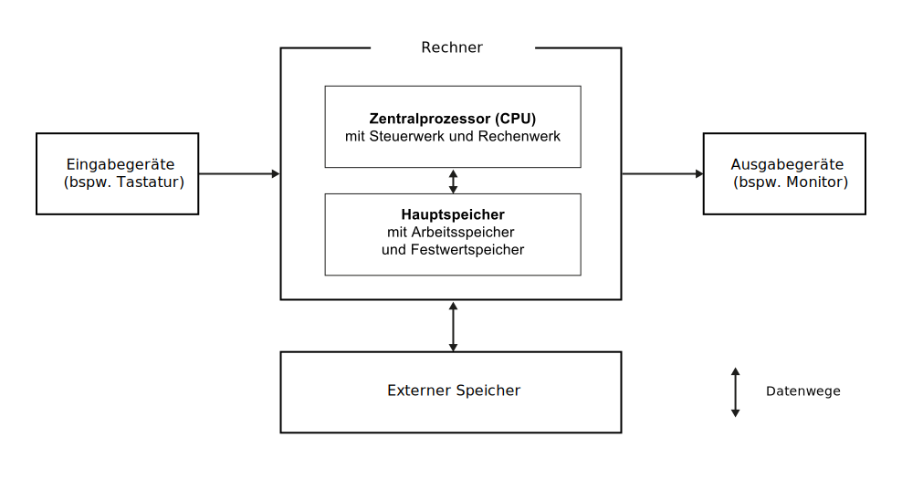
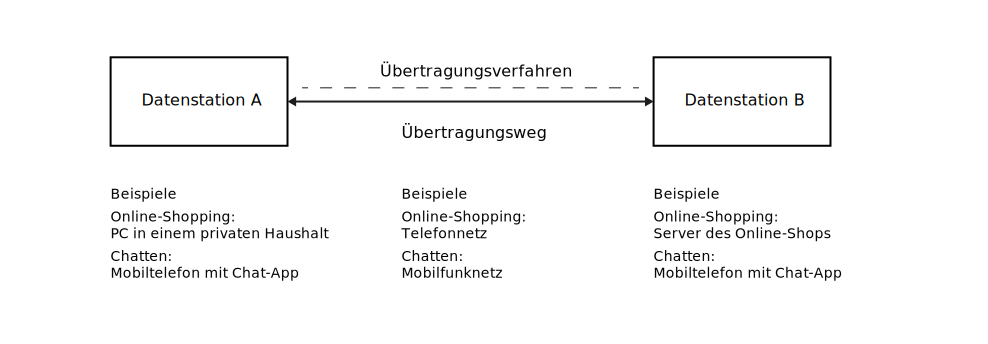
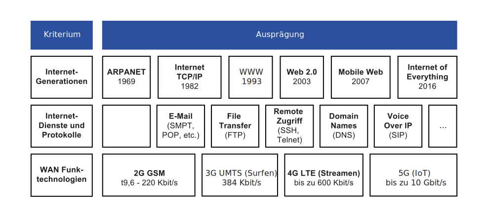
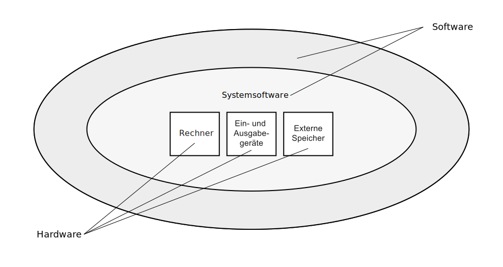
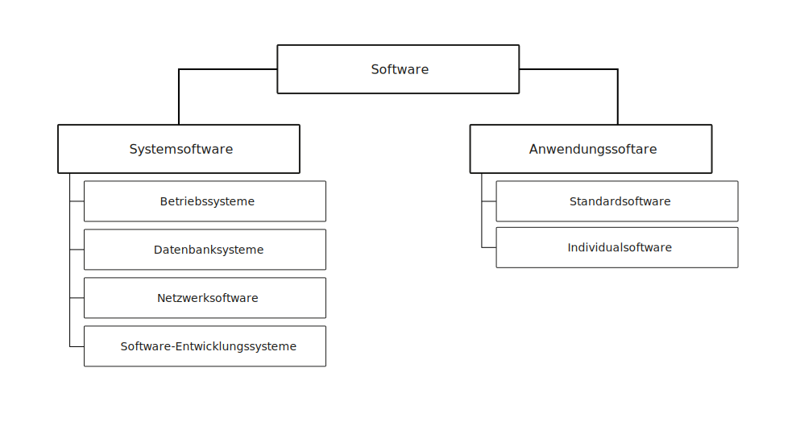
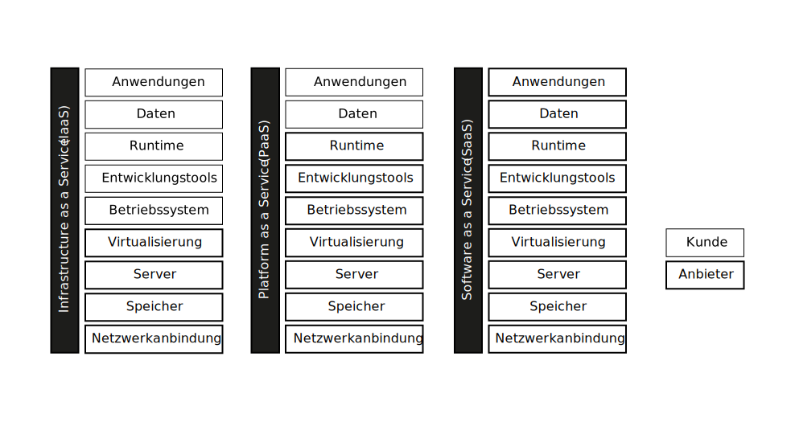

K3 Informationstechnologie
Grundzüge der Wirtschaftsinformatik (GWI)
Andy Weeger
University of Applied Sciences Neu-Ulm
Motivation
I don’t need a hard disk in my computer if I can get to the server faster. Steve Jobs (1997)
Es gibt keine Cloud – es gibt nur die Computer anderer Leute. Unbekannter Urheber
Informationstechnologien (IT) wie bspw. Serversysteme bilden die Basis heutiger Informationssysteme. In diesem Kapitel lernen Sie Basiselemente der IT-Infrastruktur kennen und lernen was diese mit der Cloud zu tun haben.
Lernergebnisse
Nach dieser Einheit
- wissen Sie, was man allgemein unter Informations- und Kommunikationstechnologie (IKT) und IT-Infrastruktur versteht,
- kennen Sie die wesentlichen Komponenten der IT (Hardware, Netzwerke und der Software),
- können Sie diese anhand von Beispielen beschreiben,
- sind Sie in der Lage den prinzipiellen Aufbau und die Funktionsweise von Computern zu erläutern und
- verstehen Sie das Konzept des Cloud-Computings inkl. der wichtigsten Bereitstellungs- und Service-Modelle.
Informationstechnologie
Definition
Der Begriff Informations- und Kommunikationstechnologie (IKT), oft kurz als Informationstechnologie (IT) bezeichnet, umfasst Technik, die zum Erheben, Speichern, Übertragen und Weiterverarbeiten von Daten und Informationen eingesetzt wird (Laudon, Laudon, und Schoder 2016).
IT bildet die Basis von Informationssystemen im digitalen Zeitalter und ist deshalb für ihre Funktionsweise elementar.
Unterschiedliche Komponenten der IT bilden die IT-Infrastruktur, also alle materiellen und imateriellen Ressourcen, die benötigt werden, um am digitalen Leben teilnehmen zu können (bspw. Computer, Internetzugang, Software) (Lemke und Brenner 2015).
Kern-IT-Infrastruktur
Die Kern-Infrastruktur enthält die für eine digitale und vernetzte Interaktion, Kommunikation und Transaktion zwischen Computern, Menschen und Maschinen notwendige Hardware-, Netzwerk- und Software-Komponenten.

Computer
Rechnerklassen

Architektur

Netzwerke
Definition
Rechnernetze dienen (oder kurz Netzwerke) der Übertragung von Daten zwischen mehreren Rechnern. Netzwerke sind verbinden Rechner über Übertragungswege miteinander und ermöglichen somit unterschiedliche Formen zur computergestützten Interaktion, Kommunikation und Transaktion (Leimeister 2021).
Netzwerke umfassen neben den physischen Übertragungseinrichtungen (bspw. Modem) und Übertragungswegen (bspw. CAT7-Kabel) auch die Protokolle (bspw. TCP/IP) und Architekturen (bspw. Client-Server-Architektur).
Datenübertragung
Um Daten zu übertragen, braucht man Datenstationen, Übertragungswege und Übertragungsverfahren. Jedes Datenübertragungssystem wird von mindestens zwei Datenstationen gebildet, die durch einen Übertragungsweg miteinander verbunden sind (Leimeister 2021, 80).

Protokolle
Netzwerkprotokolle definieren eine Grundmenge an standardisierten Kriterien zur Kommunikation (Übertragungsverfahren). Sie bilden sozusagen das gemeinsame Netzwerkbetriebssystem.
Das wahrscheinlich wichtigste Netzwerkprotokoll ist die TCP/IP-Protokollfamilie.
- TCP/IP steht für Transmission Control Protocol/Internet Protocol
- Zur Übertragung werden Daten in Pakete zerlegt und von Rechner zu Rechner geleitet
- Die Kommunikation wird über vier Schichten gesteuert: die Anwendungsschicht, die Transportschicht, die Internetschicht und die Netzwerkschicht
Klassifizierung
Computernetze können nach unterschiedlichen Kriterien klassifiziert werden, insbesondere anhand folgender Eigenschaften.
- Physik: Übertragungsmedium (kabelgebunden – bspw. Kupfer, Lichtwellenleiter; drahtlos)
- Struktur: Topologie (bspw. Stern, Ring oder Bus; heute hauptsächlich Bus)
- Örtliche Begrenzung: Netzausdehnung (bspw. Local Area Network – LAN; Wide Area Netzwork – WAN)
- Organisation: Betreibermodell (bspw. Öffentlich – Public Network; privat – Private Network)
- Leistung: Übertragungskapazität (maximal möglichen Datenübertragungsmenge pro Sekunde, Bit/s)
- Funktion: Verwendungszweck (bspw. Backbone-Netz, Netzknoten, lokales Netz)
Das Internet
Das Internet ist ein weltumspannendes Rechnernetz, das aus einer Vielzahl großer internationaler, nationaler und lokaler Teilnetze besteht („Netz der Netze“), die alle das Kommunikationsprotokoll TCP/IP verwenden.
- Das Internet ist 1969 aus dem von der Wissenschaft entwickelten und vom US-Militär initiierten Rechnernetz ARPANET (Advanced Research Projects Agency Network) entstanden.
- Der Durchbruch ist auf die rasche Verbreitung von Anwendungen zurückzuführen, die durch die Entwicklung des World Wide Web (WWW) möglich geworden sind.
- Die anwendungsnahen Dienste im Internet basieren auf standardisierten Protokollen, die zur Kommunikation zwischen Client und Server verwendet werden wie bspw. Dateiaustausch (FTP), E-Mail (SMPT, POP, IMAP), Word Wide Web (HTPP)
Ausprägungen
Das Internet verbindet weltweit eine unüberschaubare Anzahl von Netzen unterschiedlicher Struktur miteinander (“Netz der Netze”).

Software
Definition
Man unterscheidet zwischen Systemsoftware und Anwendungssoftware. Systemsoftware ist zum Betrieb und zur Steuerung der Hardware und Netzwerke erforderlich, Anwendungssoftware ist für spezifische Tätigkeiten entwickelt (Mertens u. a. 2016. S. 10ff).
Das Betriebssystem (engl. Operating System) ist Teil der Systemsoftware. Es verknüpft die Komponenten eines Computers miteinander und stellt die Verbindung zwischen einem Benutzer bzw. Anwendungsprogramm und der Hardware her.
Ein Anwendungsprogramm (engl. Application Software, kurz Software) verwendet die Ressourcen des Betriebssystems und der zugrunde liegenden Hardware. In der Alltagssprache hat sich insbesondere in Bezug auf mobile Geräte wie Smartphones die Bezeichnung App (für Applikation) durchgesetzt.
Hard- und Software

Klassifizierung

Cloud Computing
Definition
Cloud Computing ist ein auf Virtualisierung basierendes IT-Bereitstellungsmodell, bei dem Ressourcen in Form von Infrastruktur, Anwendung und Daten über das Internet als verteilter Dienst von einem oder mehreren Dienstanbietern bereitgestellt werden. Diese Dienste sind nach Bedarf skalierbar und können auf einer Pay-per-Use-Basis bepreist werden. (Böhm u. a. 2011)
Cloud-Computing-Dienste werden in verschiedene Servicemodelle (insbesondere IaaS, PaaS und SaaS) und Bereitstellungsmodelle (insbesondere public, private, hybrid) unterschieden.
Servicemodelle

Bereitstellungsmodelle
Die unterschiedlichen Bereitstellungsmodelle unterscheiden sich zum einem durch ihre Zugangsform und zum anderen durch die Einbettung dieser in eine bestehende IT-Infrastruktur.
- Private Cloud: Die Dienste sind ausschließlich für die Nutzung innerhalb einer Organisation bestimmt.
- Public Cloud: Die Dienste können von verschiedenen Personen und Unternehmen genutzt werden.
- Hybrid Cloud: Mischung aus Private und Public Cloud (Ziel: hohe Sicherheit und Skalierbarkeit).
- Community Cloud: Die Dienste können von mehreren Organisationen genutzt werden. Dazu werden mehrere Private Clouds kombiniert.
✏️ Aufgaben
A1: Grundbegriffe
Erläutern Sie in der Kleingruppe reihum die Bedeutung der folgenden Begriffe.
- IT-Infrastruktur
- Von-Neumann Architektur
- EVA-Prinzip
- Netzwerk
- TCP/IP
- Systemsoftware
- Cloud-Computing
A2: Betriebssysteme
Welche Betriebssysteme kommen in welcher Rechnerklasse zum Einsatz?
Recherchieren Sie Beispiele und ergänzen Sie Schaubild 2.
Welche davon setzen Sie selbst ein?
A3: Open Source
Betriebs- und Anwendungssysteme sind oft Open Source Software.
Recherchieren Sie diesen Begriff und schreiben Sie die Eigenschaften von Open Source Software auf.
Bereiten Sie sich darauf vor, Ihre Erläuterung des Begriffs Open Source Software im Plenum vorzustellen.
A4: Cloud Servicemodelle
Recherchieren Sie je Servicemodell (IaaS, PaaS, SaaS) ein konkretes Angebot und beschreiben Sie dieses.
Um welches Bereitstellungsmodell handelt es sich jeweils?
Welche anderen Servicemodelle werden am Markt angeboten?
Bereiten Sie sich darauf vor, Ihre Ergebnisse im Plenum vorzustellen.
A5: Cloud Vor- & Nachteile
Diskutieren Sie die Vor- und Nachteile des Cloud-Computings.
Fassen Sie Ihre Ergebnisse in einer Tabelle zusammen.
Bereiten Sie sich darauf vor, diese im Plenum vorzustellen.